保健：教科書P28〜37・P50〜61／保健体育ノートP14〜23・P38〜39（評価問題は11/16テスト後に提出）｜実技：ノート実技編P56〜57・P70〜73（水泳・バドミントン・ソフトボール）｜テスト：11/16（月）
実技の「ルールの整理と確認」は、下線部が正しければ○、誤りなら正しい語句を答える形式です。下線部にはわざと間違った内容が混ざっているので、このシートでは正しいルールで覚え、間違えやすい罠も一緒に確認しましょう。
保健体育ノートP38〜39の評価問題は、テスト後に解いて丸付け・直しをして提出します。このシートで語句とルールを固めてから、評価問題を繰り返し解きましょう。
思春期とは、子どもから大人へ、体や心が変化していく時期のことです。
| 語句 | 意味 |
|---|---|
| ホルモン | 体の働きを調節する物質。思春期の体の変化は、性ホルモンなどの働きが活発になることで引き起こされる |
| 月経 （げっけい） | 女子の生殖器の成熟に伴って起こる現象。初めての月経を初経（しょけい）という |
| 射精 （しゃせい） | 男子の生殖器の成熟に伴って起こる現象 |
| 自我 （じが） | 「自分は自分である」という意識。思春期には自我に目覚め、自立心が高まる |
各器官の発育・発達の4つの型（教科書P29）――グラフの形とセットで覚えます。
| 型 | 代表の器官 | 発育のしかた |
|---|---|---|
| ① 一般型 | 骨・筋肉・心臓・肺・胃腸・肝臓など | 身長や体重などと同じように発育する。出生後に急速に発育し、緩やかに増えて、思春期に再び急速に発育・発達する |
| ② 神経型 | 脳・脊髄など | ほかの器官に比べて早く発育・発達する。4歳頃には大人の約80%に達し、それ以後はゆっくり発育する |
| ③ リンパ型 | 胸腺・へんとうなどのリンパ器官 | 思春期に大人以上に発育し（中学生の頃には大人の約2倍ほど）、その後、小さくなって一般型と同じくらいになる。病原体などから体を守る免疫をつかさどる |
| ④ 生殖腺型 | 精巣・卵巣・子宮などの生殖器 | 幼児期はゆっくりだが、思春期になると急速に発育・発達する |
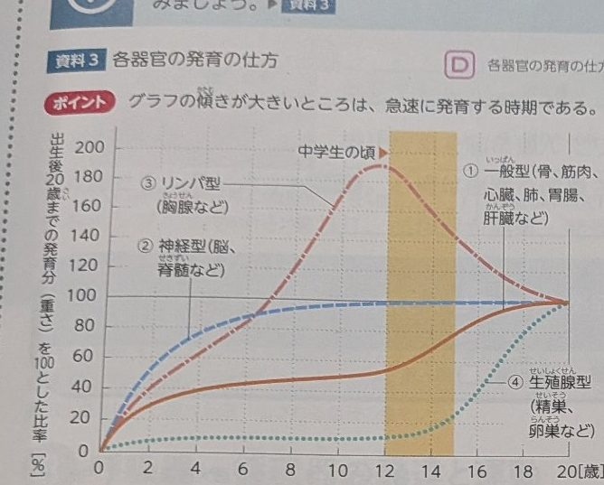
教科書P29 資料3：各器官の発育の仕方。グラフの傾きが大きいところは、急速に発育する時期
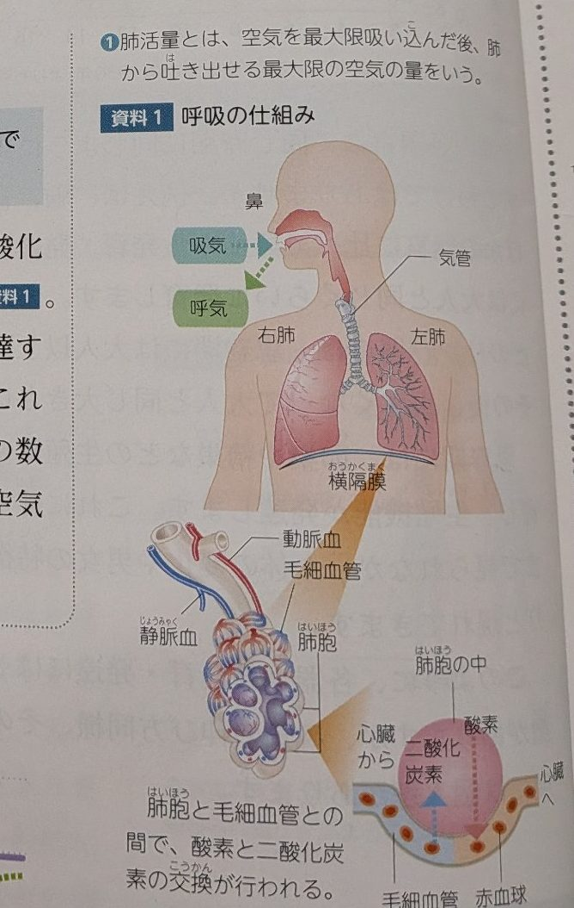
教科書P30 資料1：呼吸の仕組み。肺胞と毛細血管との間で、酸素と二酸化炭素の交換が行われる
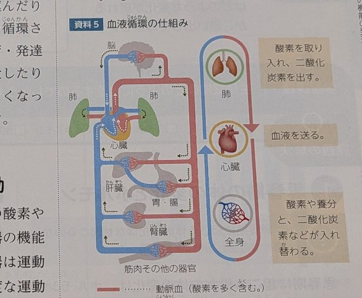
教科書P31 資料5：血液循環の仕組み。赤い血管が動脈血（酸素を多く含む）、青い血管が静脈血（二酸化炭素を多く含む）
| 男子（P33） | 性腺刺激ホルモンの働きで精巣が発育・発達し、精子がつくられ、男性ホルモンの分泌が活発になる。精子は精のうや前立腺から出る粘液と混じり合って精液となる。精液が尿道を通って体の外に放出される現象が射精で、初めての射精を精通（せいつう）という（時期には個人差がある）。射精は睡眠中などに無意識に起こることもある。精液1mL中には約1億個の精子が含まれる |
|---|---|
| 女子（P34） | 卵巣の中で卵子が成熟し、女性ホルモンの分泌が活発になる。卵子がおよそ28日に1回、性腺刺激ホルモンの働きで卵巣の外に出されることを排卵（はいらん）という。排卵の周期に合わせて子宮内膜が厚くなる。受精（卵子と精子が結合すること）が行われなかった場合、厚くなった子宮内膜が剥がれて体外に出されるのが月経で、初めての月経を初経という。月経周期は月経の初日から次の月経の前日までの日数で、平均25〜38日 |
| 受精と妊娠（P35） | 精子が膣内で放出され、排卵された卵子と卵管で結合すると受精卵になる。受精卵が子宮内膜に着床（ちゃくしょう）すると妊娠が成立する。着床した受精卵は母体から栄養分を吸収し、胎児へと育つ。射精・月経が起こるようになると、妊娠が可能になる |
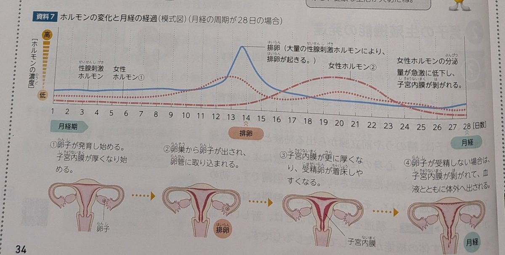
教科書P34 資料7：ホルモンの変化と月経の経過（模式図）。14日目頃に排卵が起こり、受精しない場合は子宮内膜が剥がれて月経になる
「思春期の体の変化の特徴として正しいものを選べ」という選択問題が定番です。正解は「時期や速さには個人差がある」。「全員が同じように変化する」は誤りです。加えて、発育の4つの型と代表器官の組み合わせ、肺活量・拍出量の意味、排卵→（受精しなければ）月経の流れ、精通・初経の語句が、教科書の言葉そのままで出ます。
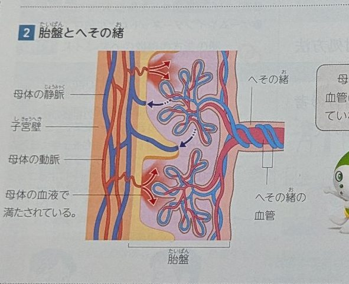
教科書P50：胎盤とへその緒。母体と胎児の血管は直接つながっていない
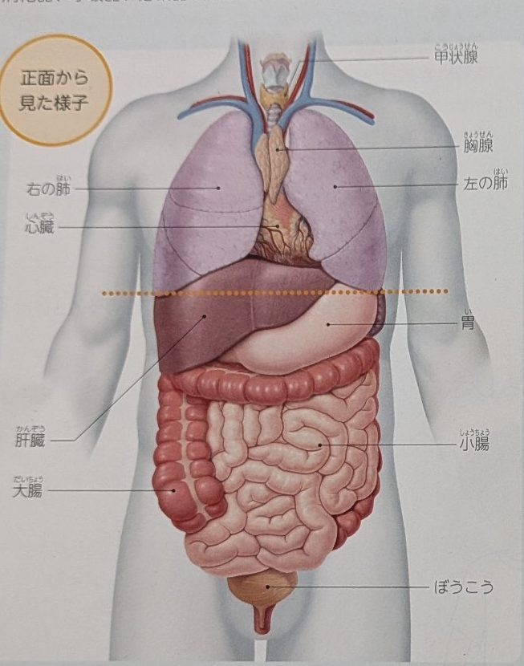
教科書P52：体のつくり（内臓）。図の中の器官名（甲状腺・胸腺・肺・心臓・肝臓・胃・小腸・大腸・ぼうこうなど）を答える問題が出やすいので、位置と名前をセットで覚える
（a・bは、年齢・性別によって異なる値。表から読み取る）
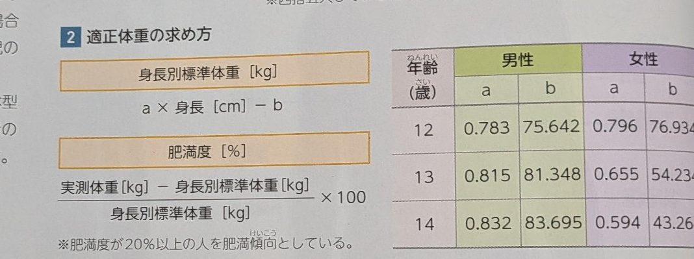
教科書P54：適正体重の求め方。まず身長別標準体重を出し、次に肥満度を計算する
章末資料からは、内臓の図を見て器官名を答える問題と、肥満度の計算問題（式に数値を当てはめる）が中心です。胎盤では「母体と胎児の血液は直接つながっているか」が正誤で聞かれやすく、答えは「直接のつながりはない」です。
| 語句 | 意味 |
|---|---|
| ストレス | 外からの刺激（ストレッサー）によって、心や体に生じる緊張やひずみの状態 |
| 欲求不満 （よっきゅうふまん） | 欲求（したい・ほしいという気持ち）が満たされず、気持ちが不安定になる状態。ストレスの原因になる |
| 適応 （てきおう） | 環境の変化に合わせて、心や体がうまく対応していくこと（詳しくは次のセクションでも扱う） |
対処法は人によって合うものが違います。自分に合った方法をいくつか持っておくことが大切です。
「ストレスへの対処法を2つ答えなさい」という記述問題と、「欲求不満」を漢字で書かせる問題が出やすいところです。語句は漢字まで正確に覚えましょう。
| 語句 | 意味 |
|---|---|
| 換気 （かんき） | 室内の汚れた空気を外に出し、新鮮な空気を取り入れること。呼吸や燃焼で増えた二酸化炭素・一酸化炭素などを減らすために必要 |
| 一酸化炭素 | 燃焼によって生じる有害な気体。無色・無臭で気づきにくく、中毒を起こす危険がある |
| 適応 | 暑さや寒さなど、環境の変化に体が慣れていく働き。暑い環境に慣れる暑熱順化（しょねつじゅんか）などが例。ただし限界があり、限度を超えると健康を損なう |
| 塩素消毒 | 水道水を安全に飲めるようにするための処理。塩素を使って、水の中の病原菌などを消毒する |
「閉め切った部屋でストーブを使うと危険な理由を、空気の観点から答えなさい」という形で、換気と一酸化炭素を結びつけて説明する問題が定番です。
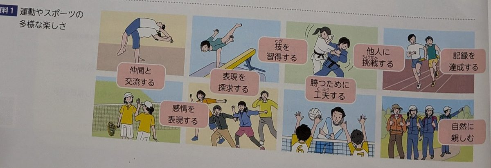
教科書P56 資料1：運動やスポーツの多様な楽しさ。場面の絵と楽しさの言葉を結びつけて覚える
「運動やスポーツへの関わり方を4つ答えなさい」「スポーツの語源は何か」のように、言葉そのものを答える問題が中心です。楽しさの8つは、図の場面と結びつけて出ることもあります。
シャトルの打ち方（ノートP70）――図の軌跡（1）〜（6）と名前を結びつけます。
| 図の番号 | 打ち方 | 軌跡の特徴 |
|---|---|---|
| （1） | ハイクリアー | 高く遠くへ飛ばす |
| （2） | ドロップショット | 弧を描いてネット際へ落とす |
| （3） | ドライブ | 低く速く、ネットと平行に飛ばす |
| （4） | カット | シャトルを切るように打ち、ネット際へ落とす |
| （5） | スマッシュ | 鋭く打ち下ろす |
| （6） | ヘアピン（ネットショット） | ネットぎりぎりを越えて真下に落とす |
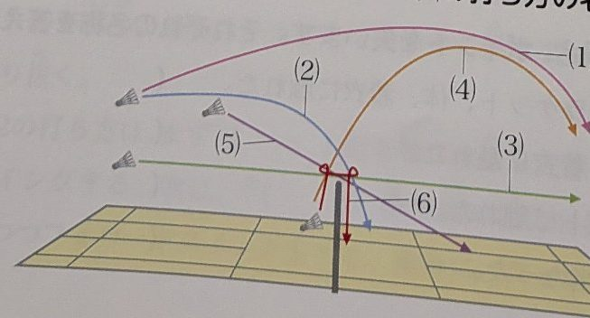
ノートP70：シャトルの飛び方。軌跡の形から打ち方の名称を答える問題が出る
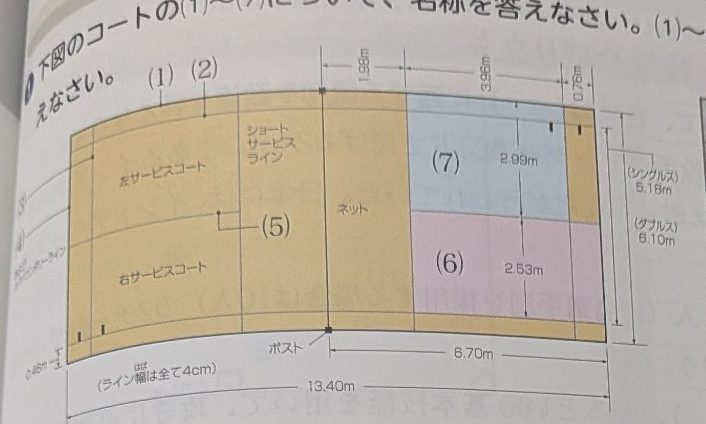
ノートP71：バドミントンのコート。（1）〜（7）のライン・コートの名称と、寸法の数値が問われる
| 名称 | 意味 |
|---|---|
| フットフォルト | サービスのときにラインを踏む・踏み越える、またはシャトルが打たれる前に足をコートから離す・ずらすこと |
| アウト | シャトルがコートの外に落ちたとき |
| フォルト | シャトルがプレイヤーの体や着衣に触れたときなど、ルール違反の打球 |
| オーバーネット | ネットを越えていないシャトルを打つこと（フォルトになる） |
| 場面 | ルール |
|---|---|
| 試合の決まり方 | 3ゲームのうち2ゲームを先に取った方が勝ち（2ゲーム先取） |
| 得点（1ゲーム） | ラリーポイント制で21点先取。ラリーに勝った方が必ず1点を得る。相手より2点差をつけるとそのゲームを取る。20対20からは2点差がつくまで続け、29対29になった場合は30点目を取った方が勝ち |
| サーブの基本 | サーブは対角線上の相手のサービスコートへ打つ。ラケットでシャトルを下から打つ（腰より下で打つ） |
| サーブの反則 | 決められたサービスコート以外に入った、ネットにかかった、コートの外に出た場合はフォルト（失点）になる。サーブのときに足がラインを踏んだり離れたりしても反則になる |
| ラリー中の反則 | シャトルがネットにかかって自陣に落ちた、コート外に落ちた、体やラケットがネットに触れた、同じ選手が続けて2回打った場合などは失点になる |
「ラリーポイント制では1ゲーム何点先取か。20対20のときはどうなるか」のように、点数の決まり方を正確に聞く問題が中心です。21点・2点差・最大30点をセットで覚えましょう。
範囲表でも特に確認するよう指定されているのが、ダブルスの進め方です。ポイントは「得点の偶数・奇数で、サーブを打つコートが決まる」ことです。
図1：バドミントンコート（上から見た図）。サーブは必ず対角線のサービスコートへ入れる
| 場面 | ダブルスの進め方 |
|---|---|
| サーブを打つコート | 自分たちの得点が偶数のときは右側、奇数のときは左側のサービスコートから打つ |
| サーブが入る範囲 | ダブルスのサービスコートは、左右は広く（ダブルスのサイドラインまで）、前後は短い（後方のダブルス用サービスラインまで）。シングルスより「短くて広い」 |
| サーブ側が得点したとき | 同じサーバーが続けて打つ。得点の偶数・奇数が変わるので、サーバーは左右のコートを替えて打ち、味方の2人もそれに合わせて位置を入れ替える |
| サーブ権を失ったとき | 相手にサーブ権が移る（サービスオーバー）。相手はそのときの得点の偶数・奇数に応じたコートからサーブを始める |
| レシーブ側の位置 | サーブ側が得点して位置を替えるとき、レシーブ側の位置は替わらない |
| サーブ後 | サーブが入ったあとは、後方の通常のラインまでコート全体を使ってラリーを続ける |
図2：サーブ側が得点すると、サーバーと味方は左右の位置を入れ替える
「ダブルスで自分たちの得点が奇数のとき、サービスはどちらのコートから打つか」「サーブ側が得点したとき、選手の位置はどうなるか」が最頻出です。偶数＝右、奇数＝左／得点したら同じサーバーが左右を替えて続けるを図と一緒に覚えましょう。
ソフトボールは野球と似ていますが、ボールの大きさ、投げ方、グラウンドの広さなどが違います。特性と基本技能、規則の基本を場面別に整理します。
図3：ソフトボールのダイヤモンド。塁の位置とタッチアップの考え方
守備位置（ノートP73）――図の（1）〜（9）の名称です。
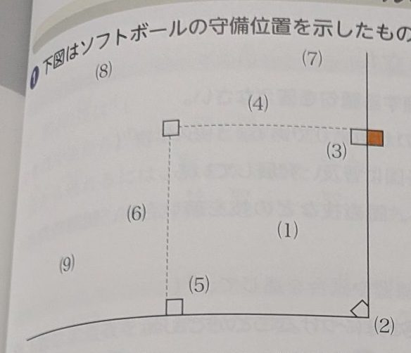
ノートP73：ソフトボールの守備位置。本塁（右下）を守るのが捕手、一塁は右上の塁
| 番号 | 名称 | 位置の目安 |
|---|---|---|
| （1） | 投手 | ダイヤモンドの中央 |
| （2） | 捕手 | 本塁の後ろ |
| （3） | 一塁手 | 一塁のそば |
| （4） | 二塁手 | 一塁と二塁の間 |
| （5） | 三塁手 | 三塁のそば |
| （6） | 遊撃手 | 二塁と三塁の間 |
| （7） | 右翼手 | 外野の一塁寄り |
| （8） | 中堅手 | 外野の中央（二塁の後ろ） |
| （9） | 左翼手 | 外野の三塁寄り |
| 場面 | ルール |
|---|---|
| 試合の進み方 | 1試合は原則7回まで。1回は先攻の攻撃（表）と後攻の攻撃（裏）で構成される |
| 攻守交替 | 攻撃側が3アウトになったら攻守を交替する |
| 投手の投げ方 | アンダーハンド（下手投げ）で投げる。野球のオーバーハンドとは違う |
| 四球（進塁） | ボールが4つになるとフォアボールで、打者は1塁へ進む |
| 三振（アウト） | ストライクが3つで三振アウト。ファウルは通常ストライクに数えるが、2ストライク後のファウルでは三振にならない |
| フライと走者 | 打球がフライで捕球されたとき、走者はタッチアップができる：捕球されるまでは塁に触れておき、捕球された後に塁を離れて進塁できる |
| 得点 | 走者が一塁・二塁・三塁を回って本塁に触れると1点 |
| 競技の開始 | 打者がバッターボックスに入って打撃姿勢をとったとき、球審の「プレイボール」の宣言で始まる（「ゲームスタート」ではない） |
| ストライクゾーン | 打者が自然な打撃姿勢をとっているときの、みぞおちと膝の皿の底部の間で、本塁上方の空間 |
| 投手の投球前 | 投手は投球前に、両足か軸足をピッチャーズプレートに置く。投げ方は下手投げ（アンダーハンド）（「上手投げ」は誤り） |
| 打者席のルール | 打者は、打者席（バッターボックス）から両足または片足全部をはみ出したり、ホームベースに触れたりしてはならない |
| 安全進塁権 | フォアボール（四球）やデッドボール（死球）では、打者に安全進塁権が与えられる |
| アウトの例 | フライを打って野手に直接捕られたときはアウト。打者走者が一塁に達する前にボールタッチされたり、ボールが一塁で野手に保持されたりしたときもアウト |
| 延長戦 | 延長8回からはタイブレーク（無死走者二塁を想定して試合を継続する方法）で試合を続ける |
| 独特のルール | リエントリー制（スターティングプレイヤーが退いた後、再出場できる）と指名選手制（打撃専門・守備専門の選手を起用できる） |
「何回まで行うか」「攻守交替の条件」「投手の投げ方」の基本3点に加えて、「フライのとき走者はどうするか（タッチアップ）」の場面問題が出やすいところです。ノートの正誤問題では、「プレイボール」と「下手投げ」が間違いにすり替えられて出るので要注意。
水泳の範囲は、保健体育ノートP56〜57（特性や成り立ち／実技の整理と確認／ルールの整理と確認）とアクティブの該当ページです。
| 水の特性 | 体への影響 |
|---|---|
| 浮力 | 体を浮かせる力。陸上より体への負担が少なく動ける |
| 水圧 | 水の重さによる圧力。深いところほど大きい |
| 抵抗 | 水の中では進む方向と反対に大きな抵抗がはたらく。空気中より進みにくい |
| 水温 | 水温は体温より低いことが多く、体温が奪われやすい。長時間の入水では体を冷やしすぎない注意が必要 |
クロール（ノートP56）――大きく分けて6つの局面で構成されます。各場面の注意点を結びつけます。
| 局面 | 注意点 |
|---|---|
| エントリー | 親指もしくは指先から入水する。入水後、手のひらは下を向く |
| グライド〜キャッチ | 手の甲を前方に向けたまま、体の内側へかき込んでくる |
| プル | 手首を45度程度下方向に曲げる。肘は手首よりも高い位置におく |
| プッシュ | 腕を伸ばすようにして、大腿部まで手をかく |
| フィニッシュ | 手が腹の下まできたら、手の甲を前方に向けたまま外へ押し出す |
| リカバリー | フィニッシュの後、肘を高くし、リラックスして行う |
平泳ぎ（ノートP56）
| 場面 | ポイント |
|---|---|
| グライド | 全身を一直線に伸ばし、水の抵抗ができるだけ小さい姿勢をとる |
| キャッチ | 両手を90度くらいに広げながら、手のひらで水をとらえる |
| プル | 手先を下に向け、肘を張り、高く保つ。両手でハート形に水をかき込む |
| フィニッシュ | 手をあごの前で合わせるようにする |
| リカバリー | 手のひらを下に向けたまま手を伸ばす |
| キック | かかとが尻より外側にならないよう足を引き付け、膝が尻の下にならないようにする。フィニッシュは両足をしっかりそろえる |
背泳ぎ（ノートP57）
競泳ルール（ノートP57）――正誤問題で出ます。正しい内容で覚えましょう。
| 場面 | 正しいルール |
|---|---|
| スタート | 出発合図の前にスタートの動作を起こすとフライング（不正出発）とみなされ、失格となる |
| 自由形で底に立つ | 自由形種目でプールの底に立つことは、失格にはならない（「失格になる」は誤り） |
| 底を歩く・蹴る | プールの底を歩いたり蹴ったりして競技を続けたり、コースロープを握ったり引っ張ったりすると違反となる |
| ターンのとき | ターンのとき、プールの底に足をついたり歩いたりしてもよい（「してはいけない」は誤り） |
| 自由形の浮上 | 自由形では、壁より15m地点までに頭が浮上しなければならない（「10m」は誤り） |
| 平泳ぎの動作 | 両腕・両脚の動作は、同時に、左右対称に行わなければならない |
| 平泳ぎのバタフライキック | スタートおよびターンの後に許されるバタフライキックは1回だけ（「3回」は誤り） |
| 平泳ぎのタッチ | ターンおよびゴールタッチは、両手同時に、かつ左右の手が離れた状態で行う。タッチは水面の上下どちらでもよい |
| 背泳ぎの姿勢 | ターンの動作を除き、常にあおむけの姿勢で泳ぐ。あおむけとは、頭部を除き、肩の回転角度が水面に対し90度未満であること |
泳法は「（ ）に適する語句を答えなさい」という空所補充、競泳ルールは下線部の正誤問題で出ます。数字のすり替え（15m／1回）と、「失格になる・してはいけない」という否定のすり替えに注意しましょう。